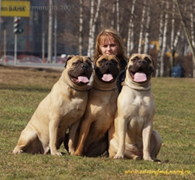

<table border="0" class="layout">
    <colgroup span="1" style="text-align: left;"><col width="15%" span="1" style="text-align: left;"></col><col width="25%" span="1" style="text-align: left;"></col><col width="60%" span="1" style="text-align: left;"></col></colgroup> 
    <tbody>
        <tr>
            <td valign="top" style="text-align: left;">
                <div class="holster">
                    <div class="block_container s3 b-text b-static-text user_css_128160066548" id="e_127779583955">
                        <p style="text-align: center;">Наши заводчики:</p>
                        <p style="text-align: center;"><em><strong>Зубкова Татьяна-</strong></em></p>
                        <p style="text-align: center;"><em><strong>питомник&nbsp; <a href="http://zolotoy-fond.ru">"Золотой Фонд"</a><br /></strong></em></p>
                        <div style="text-align: center;"></div>
                        <p style="text-align: center;"><strong>тел. 8-916-183-60-11</strong><br /><strong><a href="http://www.zolotoy-fond.ru"><br /></a></strong></p>
                        <p> </p>
                    </div>
                    <div class="block_container s3 b-image txt-center" id="e_1282663968661"><span></span></div>
                </div>
            </td>
            <td>
                <div style="text-align: justify;"></div>
                <div class="holster">
                    <div style="text-align: justify;"></div>
                    <div class="block_container s3 b-text b-static-text user_css_128160066548" id="e_128266355644">
                        <div style="text-align: justify;"></div>
                        <p align="center" style="text-align: justify;"><span style="color: #0000ff;"><strong>Бульмастиф</strong></span></p>
                        <div style="text-align: justify;"></div>
                        <p style="text-align: justify;"><span style="color: #0000ff;"><strong>Из истории породы: Б</strong></span><span style="color: #0000ff;">ульмастиф был выведен в Англии в 19 веке скрещиванием бульдога и мастифа с целью объединения качеств обеих пород. Сейчас бульмастиф используется как сторож в полиции и армии, но в доме он может быть любимцем всей семьи. В Англии 19 в. бедность нередко толкало людей на браконьерство, а строгие санкции против браконьерства приводили к тому, что они не останавливались перед убийством егерей, лишь бы избежать правосудия. Бульмастиф стал для лесничих идеальным защитником и помощников в работе: в нём смелость и свирепость бульдога соединились с мощью, быстротой и чутьём мастифа. Породу называли "ночной собакой лесничего" - по команде пёс бросался на браконьера, сбивал его с ног и прижимал к земле, но не причинял особого вреда. </span></p>
                        <div style="text-align: justify;"></div>
                        <p style="text-align: justify;"><span style="color: #006600;"><span style="color: #0000ff;"><strong>Общая характеристика:</strong> это безмолвный, грозный сторож, обладающий большой силой, ловкостью, быстротой и решимостью. Это прекрасный друг дома, он ласков и надёжен. Сочетание величия с добродушием, бесстрашия с мягкостью. Уравновешенная, бдительная, недоверчивая к посторонним, с чувством собственного достоинства, с безудержно смелым, но доброжелательным характером собака. Когда-то считавшийся агрессивным, сегодняшний бульмастиф - энергичная и смыленная собака со спокойным, покладистым нравом. </span></span></p>
                        <div style="text-align: justify;"></div>
                        <p style="text-align: justify;"><span style="color: #006600;"><span style="color: #0000ff;"><strong>Содержание и уход:</strong> нуждается в хорошем выгуливании. Детям и не очень сильным взрослым эту собаку не удержать. Хорошее состояние шерсти поддерживается регулярной чисткой щёткой. </span></span></p>
                        <div style="text-align: justify;"></div>
                        <p style="text-align: justify;"><span style="color: #006600;"><span style="color: #0000ff;"><strong>Размеры:</strong> 63-68 см (кобели), 61-66 см (суки), вес 50-60 (кобели), 41-50 (суки).</span></span></p>
                        <div style="text-align: justify;"></div>
                        <p style="text-align: justify;"><span style="color: #006600;"><span style="color: #0000ff;">_________________________________________</span></span></p>
                        <div style="text-align: justify;"></div>
                        <p style="text-align: justify;"><span style="color: #006600;"><span style="color: #0000ff;">&nbsp;</span></span></p>
                    </div>
                </div>
            </td>
        </tr>
    </tbody>
</table>​
